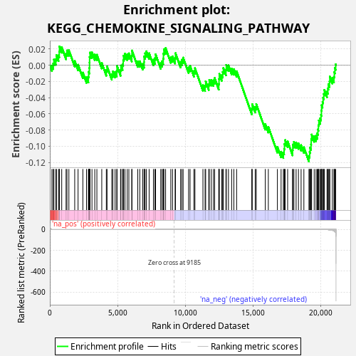
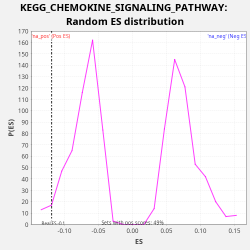

| Dataset | CCLE |
| Phenotype | NoPhenotypeAvailable |
| Upregulated in class | na_neg |
| GeneSet | KEGG_CHEMOKINE_SIGNALING_PATHWAY |
| Enrichment Score (ES) | -0.11897577 |
| Normalized Enrichment Score (NES) | -1.6520326 |
| Nominal p-value | 0.037549406 |
| FDR q-value | 0.094006725 |
| FWER p-Value | 0.949 |

| SYMBOL | RANK IN GENE LIST | RANK METRIC SCORE | RUNNING ES | CORE ENRICHMENT | |
|---|---|---|---|---|---|
| 1 | STAT1 | 155 | 1.252 | -0.0003 | No |
| 2 | GNG10 | 255 | 0.472 | 0.0021 | No |
| 3 | ARRB1 | 301 | 0.302 | 0.0070 | No |
| 4 | TIAM2 | 444 | 0.144 | 0.0074 | No |
| 5 | GRK3 | 486 | 0.118 | 0.0125 | No |
| 6 | CXCL16 | 641 | 0.070 | 0.0122 | No |
| 7 | CCR1 | 696 | 0.058 | 0.0168 | No |
| 8 | PLCB4 | 710 | 0.056 | 0.0232 | No |
| 9 | TIAM1 | 877 | 0.038 | 0.0224 | No |
| 10 | GRK4 | 1198 | 0.020 | 0.0143 | No |
| 11 | AKT2 | 1264 | 0.018 | 0.0183 | No |
| 12 | CXCL14 | 1406 | 0.015 | 0.0186 | No |
| 13 | CXCR6 | 1836 | 0.008 | 0.0053 | No |
| 14 | PIK3R1 | 2084 | 0.006 | 0.0006 | No |
| 15 | CCR4 | 2437 | 0.004 | -0.0091 | No |
| 16 | RAP1A | 2706 | 0.003 | -0.0148 | No |
| 17 | PRKACB | 2844 | 0.003 | -0.0142 | No |
| 18 | PRKCZ | 2866 | 0.003 | -0.0081 | No |
| 19 | LYN | 2917 | 0.003 | -0.0034 | No |
| 20 | PIK3CG | 2930 | 0.003 | 0.0031 | No |
| 21 | GRB2 | 2935 | 0.003 | 0.0100 | No |
| 22 | PIK3CD | 2966 | 0.003 | 0.0157 | No |
| 23 | FOXO3 | 3110 | 0.002 | 0.0160 | No |
| 24 | CCL28 | 3316 | 0.002 | 0.0133 | No |
| 25 | CDC42 | 3472 | 0.002 | 0.0130 | No |
| 26 | PIK3R2 | 3833 | 0.001 | 0.0029 | No |
| 27 | GSK3A | 4169 | 0.001 | -0.0060 | No |
| 28 | GNG5 | 4222 | 0.001 | -0.0013 | No |
| 29 | RAC1 | 4573 | 0.001 | -0.0109 | No |
| 30 | STAT3 | 4654 | 0.001 | -0.0077 | No |
| 31 | NFKBIB | 4816 | 0.001 | -0.0082 | No |
| 32 | PLCB3 | 4941 | 0.001 | -0.0070 | No |
| 33 | PXN | 4961 | 0.001 | -0.0009 | No |
| 34 | GNAI2 | 5220 | 0.000 | -0.0061 | No |
| 35 | RHOA | 5248 | 0.000 | -0.0003 | No |
| 36 | PARD3 | 5370 | 0.000 | 0.0011 | No |
| 37 | RAP1B | 5414 | 0.000 | 0.0061 | No |
| 38 | AKT3 | 5443 | 0.000 | 0.0119 | No |
| 39 | PRKACA | 5543 | 0.000 | 0.0142 | No |
| 40 | KRAS | 5712 | 0.000 | 0.0133 | No |
| 41 | PIK3R3 | 5833 | 0.000 | 0.0147 | No |
| 42 | VAV2 | 6049 | 0.000 | 0.0115 | No |
| 43 | SHC1 | 6060 | 0.000 | 0.0182 | No |
| 44 | PAK1 | 6489 | 0.000 | 0.0049 | No |
| 45 | GRK6 | 6638 | 0.000 | 0.0049 | No |
| 46 | IKBKB | 6856 | 0.000 | 0.0016 | No |
| 47 | PRKCB | 6960 | 0.000 | 0.0038 | No |
| 48 | GNB1 | 6962 | 0.000 | 0.0109 | No |
| 49 | STAT5B | 7030 | 0.000 | 0.0148 | No |
| 50 | STAT2 | 7128 | 0.000 | 0.0172 | No |
| 51 | PTK2B | 7330 | 0.000 | 0.0148 | No |
| 52 | MAP2K1 | 7646 | 0.000 | 0.0068 | No |
| 53 | GNAI3 | 7756 | 0.000 | 0.0087 | No |
| 54 | CRK | 7806 | 0.000 | 0.0135 | No |
| 55 | MAPK1 | 8184 | 0.000 | 0.0026 | No |
| 56 | NRAS | 8284 | 0.000 | 0.0050 | No |
| 57 | PIK3CB | 8368 | 0.000 | 0.0081 | No |
| 58 | ARRB2 | 8386 | 0.000 | 0.0144 | No |
| 59 | GNG13 | 8422 | 0.000 | 0.0198 | No |
| 60 | AKT1 | 8545 | 0.000 | 0.0211 | No |
| 61 | ADCY9 | 8930 | 0.000 | 0.0099 | No |
| 62 | GSK3B | 9057 | 0.000 | 0.0110 | No |
| 63 | MAPK3 | 9247 | -0.000 | 0.0091 | No |
| 64 | GNB5 | 9275 | -0.000 | 0.0149 | No |
| 65 | GNG12 | 9650 | -0.000 | 0.0041 | No |
| 66 | WASL | 9744 | -0.000 | 0.0068 | No |
| 67 | ROCK1 | 9839 | -0.000 | 0.0094 | No |
| 68 | CRKL | 10243 | -0.000 | -0.0027 | No |
| 69 | RELA | 10351 | -0.000 | -0.0007 | No |
| 70 | GNB2 | 10636 | -0.000 | -0.0071 | No |
| 71 | CHUK | 10711 | -0.000 | -0.0036 | No |
| 72 | BRAF | 11301 | -0.000 | -0.0246 | No |
| 73 | JAK2 | 11459 | -0.000 | -0.0249 | No |
| 74 | PRKX | 11503 | -0.000 | -0.0199 | No |
| 75 | RAF1 | 11730 | -0.000 | -0.0236 | No |
| 76 | GNGT1 | 11769 | -0.000 | -0.0183 | No |
| 77 | JAK3 | 11917 | -0.000 | -0.0182 | No |
| 78 | PREX1 | 12075 | -0.000 | -0.0186 | No |
| 79 | SOS2 | 12166 | -0.000 | -0.0158 | No |
| 80 | ADCY7 | 12469 | -0.000 | -0.0231 | No |
| 81 | FGR | 12489 | -0.000 | -0.0169 | No |
| 82 | CSK | 12508 | -0.000 | -0.0107 | No |
| 83 | NFKB1 | 12691 | -0.000 | -0.0123 | No |
| 84 | CCL26 | 12760 | -0.000 | -0.0084 | No |
| 85 | ADCY6 | 12807 | -0.000 | -0.0035 | No |
| 86 | HRAS | 12999 | -0.001 | -0.0055 | No |
| 87 | PRKCD | 13025 | -0.001 | 0.0004 | No |
| 88 | GNAI1 | 13184 | -0.001 | -0.0001 | No |
| 89 | BCAR1 | 13423 | -0.001 | -0.0043 | No |
| 90 | PTK2 | 13583 | -0.001 | -0.0048 | No |
| 91 | NFKBIA | 13788 | -0.001 | -0.0074 | No |
| 92 | WAS | 14906 | -0.002 | -0.0536 | No |
| 93 | CXCR4 | 14941 | -0.002 | -0.0481 | No |
| 94 | RAC2 | 15160 | -0.002 | -0.0514 | No |
| 95 | ADCY3 | 15238 | -0.003 | -0.0480 | No |
| 96 | DOCK2 | 15903 | -0.004 | -0.0725 | No |
| 97 | ROCK2 | 16128 | -0.005 | -0.0761 | No |
| 98 | PLCB2 | 16797 | -0.008 | -0.1008 | No |
| 99 | GNB4 | 17070 | -0.010 | -0.1067 | No |
| 100 | PIK3CA | 17238 | -0.011 | -0.1076 | No |
| 101 | ADCY4 | 17295 | -0.012 | -0.1032 | No |
| 102 | SHC3 | 17321 | -0.012 | -0.0973 | No |
| 103 | CCR3 | 17369 | -0.013 | -0.0924 | No |
| 104 | NCF1 | 17553 | -0.015 | -0.0940 | No |
| 105 | SOS1 | 17918 | -0.021 | -0.1043 | No |
| 106 | PLCB1 | 17932 | -0.021 | -0.0978 | No |
| 107 | VAV3 | 18017 | -0.023 | -0.0947 | No |
| 108 | VAV1 | 18179 | -0.026 | -0.0953 | No |
| 109 | GNG11 | 18352 | -0.031 | -0.0964 | No |
| 110 | GRK2 | 18547 | -0.039 | -0.0986 | No |
| 111 | GNGT2 | 18752 | -0.049 | -0.1012 | No |
| 112 | ADCY1 | 19126 | -0.077 | -0.1119 | Yes |
| 113 | ADCY5 | 19177 | -0.083 | -0.1072 | Yes |
| 114 | CCL22 | 19212 | -0.086 | -0.1017 | Yes |
| 115 | GRK5 | 19280 | -0.094 | -0.0978 | Yes |
| 116 | GRK7 | 19292 | -0.096 | -0.0912 | Yes |
| 117 | CCL27 | 19322 | -0.100 | -0.0855 | Yes |
| 118 | ELMO1 | 19515 | -0.138 | -0.0876 | Yes |
| 119 | CXCL5 | 19651 | -0.181 | -0.0869 | Yes |
| 120 | SHC2 | 19741 | -0.215 | -0.0841 | Yes |
| 121 | CXCR2 | 19788 | -0.234 | -0.0792 | Yes |
| 122 | CCR10 | 19828 | -0.256 | -0.0739 | Yes |
| 123 | XCL1 | 19857 | -0.274 | -0.0682 | Yes |
| 124 | CXCL12 | 19953 | -0.342 | -0.0656 | Yes |
| 125 | CXCL10 | 20014 | -0.401 | -0.0614 | Yes |
| 126 | CXCL11 | 20048 | -0.440 | -0.0559 | Yes |
| 127 | CCL2 | 20061 | -0.455 | -0.0493 | Yes |
| 128 | GNG4 | 20129 | -0.544 | -0.0454 | Yes |
| 129 | RASGRP2 | 20170 | -0.614 | -0.0403 | Yes |
| 130 | CCR7 | 20219 | -0.709 | -0.0355 | Yes |
| 131 | GNG2 | 20265 | -0.806 | -0.0305 | Yes |
| 132 | CCL20 | 20458 | -1.370 | -0.0326 | Yes |
| 133 | CXCL3 | 20522 | -1.719 | -0.0285 | Yes |
| 134 | GNG7 | 20561 | -2.085 | -0.0232 | Yes |
| 135 | SHC4 | 20646 | -2.912 | -0.0201 | Yes |
| 136 | CXCL2 | 20667 | -3.120 | -0.0140 | Yes |
| 137 | GNB3 | 20852 | -7.026 | -0.0156 | Yes |
| 138 | CXCL1 | 20972 | -13.356 | -0.0142 | Yes |
| 139 | CXCL8 | 21001 | -15.513 | -0.0085 | Yes |
| 140 | CXCL6 | 21041 | -19.944 | -0.0032 | Yes |
| 141 | CX3CL1 | 21100 | -31.382 | 0.0011 | Yes |

{kind=link}
{kind=link}